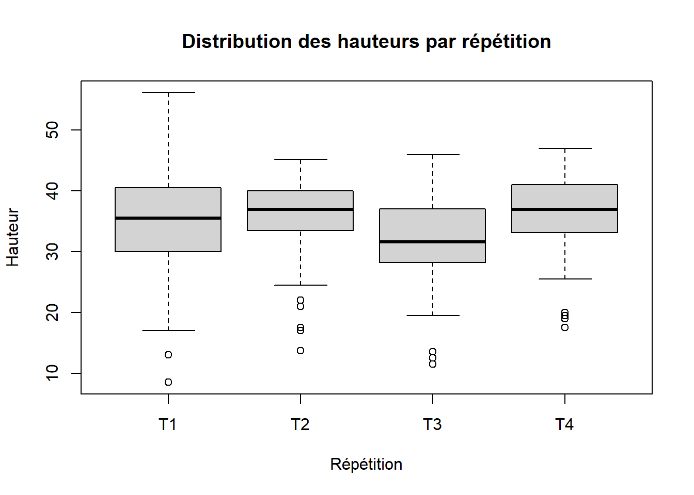
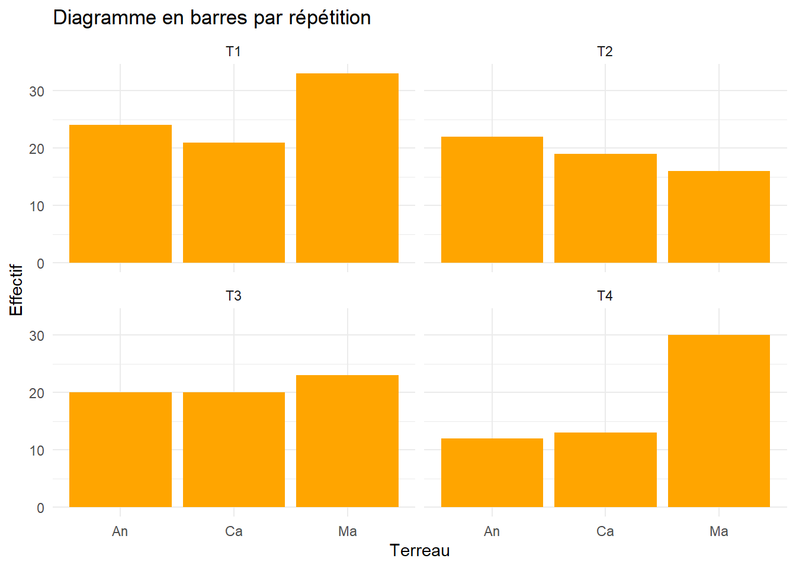
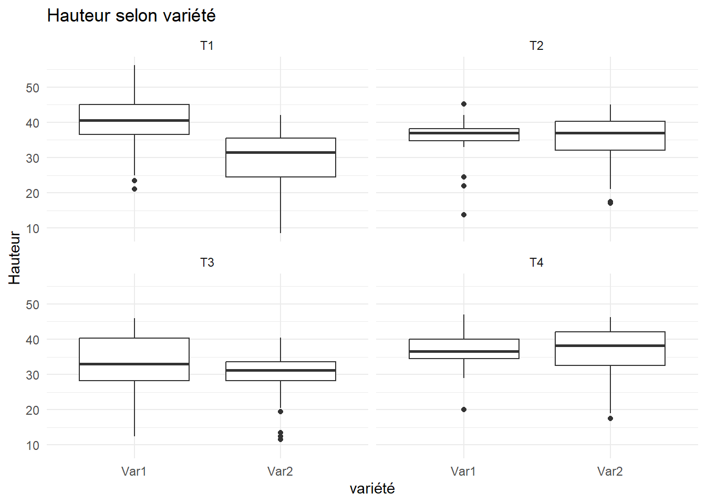

II. Analyse descriptive des variables d’étude
La base utilisée porte sur des données réelles recueillies dans le cadre d’une expérimentation.Dans le cadre de cette expérimentation, trois types de terreau : Manguier (Ma), Caïlcédrat (Ca) et Anacarde (An) ont été utilisées sur deux types de variétés de plantes (Var1 et Var2). L’expérience a été répété quatre fois et chaque fois on mesure la hauteur des plantes.
Voici un aperçu de la base :
# A tibble: 6 × 5
Sujet Répétition Terreau variété Hauteur
<dbl> <fct> <fct> <fct> <dbl>
1 1 T1 Ma Var1 43
2 2 T1 Ma Var1 42
3 3 T1 Ma Var1 40
4 4 T1 Ma Var1 46
5 5 T1 Ma Var1 42
6 6 T1 Ma Var1 401. Description de la base de données
[1] 253 5La base contient 5 variables et 253 lignes. Comme il y’a des répétitions, le nombre de ligne n’est pas égal au nombre d’individus. La variable de répetition se présente comme suit :
| Répétition | Effectif (n) |
|---|---|
| T1 | 78 |
| T2 | 57 |
| T3 | 63 |
| T4 | 55 |
Valeurs manquantes
On constate des valeurs manquantes, car le nombre d’observations pour chaque répétition n’est pas le même.
L’ANOVA à mesures répétées classique repose sur un plan complet et ne considère que les sujets disposant de l’ensemble des mesures. Les observations incomplètes sont donc exclues de l’analyse.
Sous l’hypothèse que ces données manquantes sont aléatoires (MCAR), cette exclusion n’introduit pas de biais systématique mais peut réduire la puissance statistique.
Valeurs abberantes
Les données analysées proviennent d’une expérimentation agronomique contrôlée. Les hauteurs observées correspondent à des mesures physiques réelles et non à des déclarations ou des données administratives. Ainsi, les valeurs extrêmes potentielles reflètent davantage la variabilité biologique naturelle que des anomalies statistiques.
Une inspection graphique par boîtes à moustaches, réalisée par répétition expérimentale, ne met pas en évidence de valeurs aberrantes isolées susceptibles d’indiquer une erreur de mesure ou de saisie. Les éventuelles valeurs extrêmes observées sont cohérentes avec la dispersion attendue dans un contexte biologique réel et ont donc été conservées dans l’analyse.
boxplot(Hauteur ~ Répétition, data = data,
main = "Distribution des hauteurs par répétition",
ylab = "Hauteur")
2. Analyse univariée
Variable hauteur
- Résumé de la variable hauteur
Le tableau suivant présente quelques statistiques descriptives de la variable à expliquer hauteur, suivant les périodes.
| Répétition | Min | 1er Quartile | Médiane | Moyenne | 3e Quartile | Max |
|---|---|---|---|---|---|---|
| T1 | 8.5 | 30.00 | 35.5 | 34.32 | 40.50 | 56.2 |
| T2 | 13.7 | 33.50 | 37.0 | 35.41 | 40.00 | 45.2 |
| T3 | 11.5 | 28.25 | 31.6 | 31.42 | 37.05 | 46.0 |
| T4 | 17.5 | 33.10 | 37.0 | 36.27 | 41.00 | 47.0 |
Les plantes semblent globalement connaître une nette évolution entre la période une et deux, puis une baisse de croissance entre la prériode 2 et 3, et enfin une hausse entre les deux dernières périodes.
Variable terreau
- Résumé de la variable terreau
Le tableau suivante présente les effectifs de chaque type de terreau par période.
| Répétition | An | Ca | Ma |
|---|---|---|---|
| T1 | 24 | 21 | 33 |
| T2 | 22 | 19 | 16 |
| T3 | 20 | 20 | 23 |
| T4 | 12 | 13 | 30 |
Ce tableau est illustré par les diagrammes en barre suivant :
- Diagramme en barre de la variable terreau

Variable variété
- Résumé de la variable variété
Le tableau suivante présente les effectifs de chaque type de variété par période
| Répétition | Var1 | Var2 |
|---|---|---|
| T1 | 37 | 41 |
| T2 | 27 | 30 |
| T3 | 31 | 32 |
| T4 | 29 | 26 |
Ce tableau est illustré par les diagrammes suivants :
- Diagramme en barre de la variable variété

3. Analyse bivariée
Variable terreau et hauteur
La figure suivante présente les boxplots de la variable hauteur selon les modalités de la variable terreau et suivant les périodes.

D’après ces boxplots, nous pouvons constater qu’au cours des périodes 1 et 2, le type de terreau utilisé ne semble pas influencer la hauteur des plantes. Durant les périodes 3 et 4 cependant, le type de terreau semble avoir un effet sur les plantes. En effet, les plantes ayant utilisées le terreau de type Ca semblent plus grandes que les autres.
Variable variété et hauteur
La figure suivante présente les boxplots de la variable hauteur selon les modalités de la variable variété et suivant les périodes.

ID’après ce graphique, de manière générale, le type de variété semé semble influencer la hauteur des plantes. On constate par exemple que dans les périodes 1 et 3, les hauteurs des plantes de la variété 2 semblent inférieures à celle des plantes de la variété 1.
Toutes ces observations vont être testées de façon plus rigoureuses par l’ANOVA à mesure répétées.